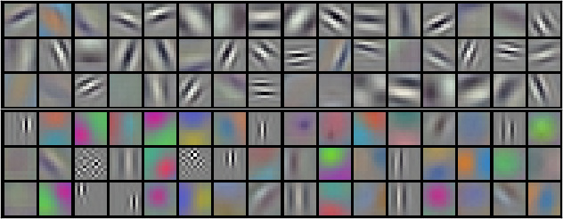

ImageNet classification with deep convolutional neural networks

| Architecture Type | Deep Convolutional Neural Network (CNN) |
|---|---|
| Key Innovation | ReLU Activation and GPU Parallelization |
| Performance Metric | 15.3% top-5 error rate (ILSVRC-2012) |
| Computational Efficiency | Trained for 6 days on two NVIDIA GTX 580 GPUs |
| Venue | Communications of the ACM |
| Year | 2012 |
| Citations | 127985 |
| DOI | Link |
AlexNet is a seminal deep convolutional neural network (CNN) architecture that revolutionized computer vision by winning the 2012 ImageNet Large Scale Visual Recognition Challenge (ILSVRC). Developed by Alex Krizhevsky, Ilya Sutskever, and Geoffrey Hinton, the model achieved a record-breaking top-5 error rate of 15.3%, outperforming the second-best entry by more than 10 percentage points and establishing deep learning as the dominant paradigm for visual recognition.
Non-Saturating ReLU Activation
A primary contribution of the AlexNet architecture is the replacement of traditional saturating activation functions, such as the logistic sigmoid or hyperbolic tangent, with Rectified Linear Units (ReLUs). Saturating nonlinearities are computationally expensive during training via gradient descent because their gradients vanish as the input magnitude increases, leading to slow convergence.
In contrast, ReLUs (defined as f(x) = max(0, x)) are non-saturating and allow for much faster training. The authors demonstrated that a four-layer CNN with ReLUs reached a 25% training error rate on the CIFAR-10 dataset six times faster than an equivalent network using tanh neurons. This acceleration was critical for enabling the experimentation and training of a model as large as AlexNet on the massive ImageNet dataset.
Multi-GPU Distributed Architecture
To accommodate the 60 million parameters and the memory constraints of 2012-era hardware, AlexNet was split across two NVIDIA GTX 580 GPUs, each with 3GB of memory. This parallelization scheme involves putting half of the kernels (or neurons) on each GPU, with a specific cross-GPU connectivity pattern.
Crucially, the GPUs communicate only in certain layers. For instance, the kernels in the third convolutional layer take input from all kernel maps in the second layer, whereas kernels in the fourth layer only take input from maps residing on the same GPU. This precisely tuned communication-to-computation ratio allowed the authors to train a significantly larger network than would be possible on a single device, reducing top-1 and top-5 error rates by 1.7% and 1.2% respectively compared to a single-GPU model of half the size.
Local Response Normalization and Lateral Inhibition
While ReLU neurons do not require input normalization to prevent saturation, the authors introduced a local normalization scheme to aid generalization. This Local Response Normalization (LRN) implements a form of lateral inhibition, inspired by the behavior of real biological neurons.
LRN creates competition for high activities among neuron outputs computed using different kernels at the same spatial position. This process helps the model specialize its kernels and improves the robustness of the features learned. The authors reported that applying this normalization after the ReLU nonlinearity in specific layers reduced top-1 and top-5 error rates by 1.4% and 1.2%, aiding the model's ability to distinguish between fine-grained categories in the ImageNet dataset.
Overlapping Max-Pooling
AlexNet utilizes overlapping pooling layers to summarize the outputs of neighboring groups of neurons within a kernel map. Traditionally, pooling units are spaced such that they do not overlap (e.g., a stride equal to the pooling window size). AlexNet, however, uses a pooling window of 3x3 pixels with a stride of 2 pixels.
This overlapping scheme produces output of the same dimensions as traditional pooling but makes it slightly more difficult for the model to overfit during training. The authors observed that this configuration reduced top-1 and top-5 error rates by 0.4% and 0.3% respectively. These pooling layers follow both response-normalization layers as well as the fifth convolutional layer, providing spatial hierarchy and translation invariance.
Overfitting Mitigation via Dropout and Augmentation

Given the model's 60 million parameters, overfitting was a significant challenge despite the scale of the ImageNet dataset. To combat this, the authors employed two primary regularization techniques: data augmentation and dropout. Data augmentation included horizontal reflections and random crops of 224x224 patches from the 256x256 source images, as well as PCA-based color intensity alterations.
Dropout, a recently developed technique at the time, was applied to the first two fully-connected layers. It consists of setting the output of each hidden neuron to zero with a probability of 0.5 during training. This prevents neurons from co-adapting too closely, forcing them to learn more robust and independent features. Figure 1 demonstrates that without such regularization, the network's capacity would lead to substantial overfitting, rendering it unable to generalize to the test set.
Qualitative Visual Analysis and Feature Similarity

The visual knowledge of the network can be assessed by examining the labels assigned to test images and the internal representations learned. Figure 2 illustrates the top-5 predictions for various test images, showing that even when the top prediction is incorrect, the remaining labels are often semantically related (e.g., different breeds of cats for a leopard image).
Furthermore, by examining the 4096-dimensional activations in the last hidden layer, the authors found that images with small Euclidean distances in this feature space are semantically similar, even if they differ significantly at the pixel level (e.g., dogs in different poses). This suggests that the network learns a high-level representation of objects that transcends simple edge matching, effectively capturing the underlying categories present in the data.
Concept Breakdown
An activation function that outputs the input directly if it is positive, and zero otherwise, significantly accelerating training speed.
A regularization technique that randomly ignores a subset of neurons during training to prevent complex co-adaptations and reduce overfitting.
The process of artificially increasing the size of a training set by applying label-preserving transformations like cropping and flipping.
A spatial reduction technique where the pooling window size is larger than the stride, which helps in preventing overfitting and capturing spatial hierarchies.
A performance metric measuring the percentage of test images for which the correct label is not among the five most probable labels predicted by the model.
Mathematics
Rectified Linear Unit (ReLU)
| Symbol | Meaning |
|---|---|
| $x$ | Input to the neuron |
| $f(x)$ | Output activity of the neuron |
Local Response Normalization (LRN)
| Symbol | Meaning |
|---|---|
| $a^i_{x,y}$ | Activity of a neuron computed by applying kernel i at position (x, y) |
| $b^i_{x,y}$ | Response-normalized activity |
| $n$ | Number of adjacent kernel maps to consider in the sum |
| $N$ | Total number of kernels in the layer |
| $k, α, β$ | Hyper-parameters (constants) determined using a validation set |
Momentum SGD Update Rule
| Symbol | Meaning |
|---|---|
| $w$ | Weight variable being updated |
| $v$ | Momentum variable |
| $ε$ | Learning rate |
| $∂L/∂w$ | Derivative of the objective function with respect to the weight |
| $D_i$ | The ith batch of training examples |
Figures and Explanations
This figure (referenced in text as Figure 1) shows the training progress of a four-layer CNN using ReLUs compared to one using tanh neurons. It demonstrates that ReLUs allow the network to reach a 25% training error rate six times faster, highlighting the efficiency gains of non-saturating units. The caption snippet 'Without dropout, our network ex-' indicates the importance of regularization in these deep architectures.
This figure (referenced in text as Figure 4) provides a qualitative assessment of the model. The left panel shows test images along with their top-5 predicted labels and associated probabilities. The right panel shows query images from the test set alongside the six most similar training images based on Euclidean distance in the final hidden layer's feature space, demonstrating semantic understanding.